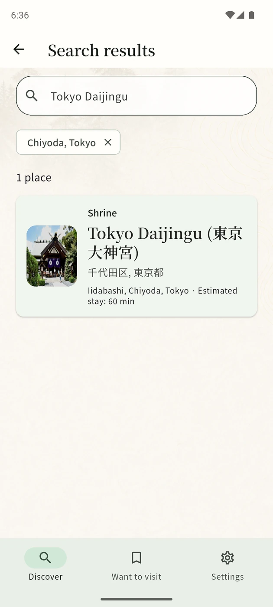
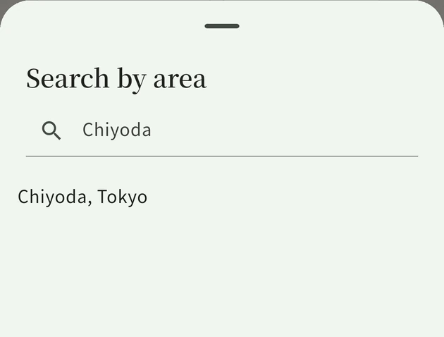

Still searching from site to site?
Find Japan’s
spiritual places,
all in one app.
Shrines, temples and natural power spots.
A single place to start your search.
KOKORO SPOT brings places from across Japan into one searchable catalog. Explore by area or keyword, read the stories behind each place, and save the ones you’d like to visit.
Available on Android iOS review in progress


Places across Japan.
One app to find them.
From shrines and temples to forests, mountains and waterfalls.
Search the places in our catalog by the area or words that interest you.
Included places range from Garo Falls in Hokkaido to Fushimi Inari Taisha in Kyoto and Izumo Taisha in Shimane.
Choose an area
Example: Chiyoda, Tokyo

Find a place to visit
Example: Tokyo Daijingu in Chiyoda
Search by area, place name or keyword. These examples show Chiyoda and Tokyo Daijingu.
Real English-locale screens: some place names and location labels remain in Japanese. Appearance varies by device and version.
Find a place.
Discover its story.
Go beyond a name on a map. Read about a place’s history, beliefs and cultural background, along with the details to look out for when you visit.
In this sense, en-musubi is more than finding a partner. It is the possibility that separate elements of a life may come together in a good way.
The article explores the shrine’s connection with Ise Jingu and the meaning of en-musubi—connections that reach beyond romance.
Stories describe beliefs and cultural traditions. They do not promise spiritual effects or particular outcomes.
Read the story in the app, with English selected.
Find a place, then get to know it.
When you’re ready to visit, open an external map from its details.
Keep the places
you want to return to.
Save a discovery to “Want to visit.” Keep the places you find in one list, ready to look through again later.
Find saved places by keyword, or sort your list by name or area. A shrine in Tokyo and a place in Shimane can sit together in the same list on your device.
Actual app screens. Appearance may vary by device and version. Screenshot and photo credits
An area. A word.
A place that interests you.
From the first search
to a list you can come back to.
Search by area or keyword
Choose a prefecture or area, or type a word that interests you. Explore places in the catalog through the same app.
Read the story behind it
Open the details to learn about its history, beliefs and highlights before you go.
Save it. Find it on a map.
Add a place to “Want to visit.” When you decide to go, open an external map from the place’s details.
A few things to know.
How do I find spiritual places in Japan?
Choose a prefecture or area, or search by place name or keyword. KOKORO SPOT brings the shrines, temples and natural places in its catalog into one app. It does not cover every power spot in Japan.
What kinds of places can I explore?
The catalog includes shrines and temples, as well as natural places such as mountains, forests, waterfalls, coasts and caves. Search by area or a word that interests you.
Is it free to use?
Yes. All features are free to use.
Is the app available in English?
Yes. The app has English controls and article text. Some place names and location labels still include Japanese. The screenshots on this page show the actual app with English selected.
Can I read articles offline?
The text of articles included in the app can be read without an internet connection. Loading photos and opening external maps or websites may require a connection.
What does “power spot” mean here?
We introduce these places through their history, beliefs and cultural context. Descriptions of spiritual meaning are not promises of supernatural or scientific effects, or of a particular outcome.
Is there an iPhone version?
The iOS version is going through the App Store review process. A release date has not been announced. The Android version is available on Google Play.
Japan’s spiritual places.
Start with one app.
Choose an area or a word, and see which places you discover.

Android · Free, with ads and in-app purchases
iOS review in progress.